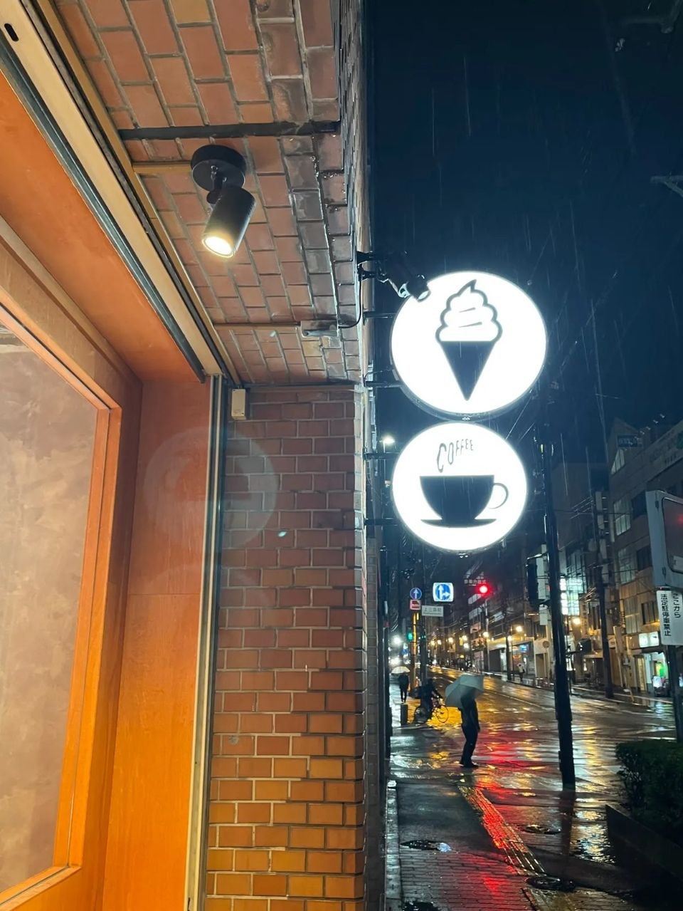
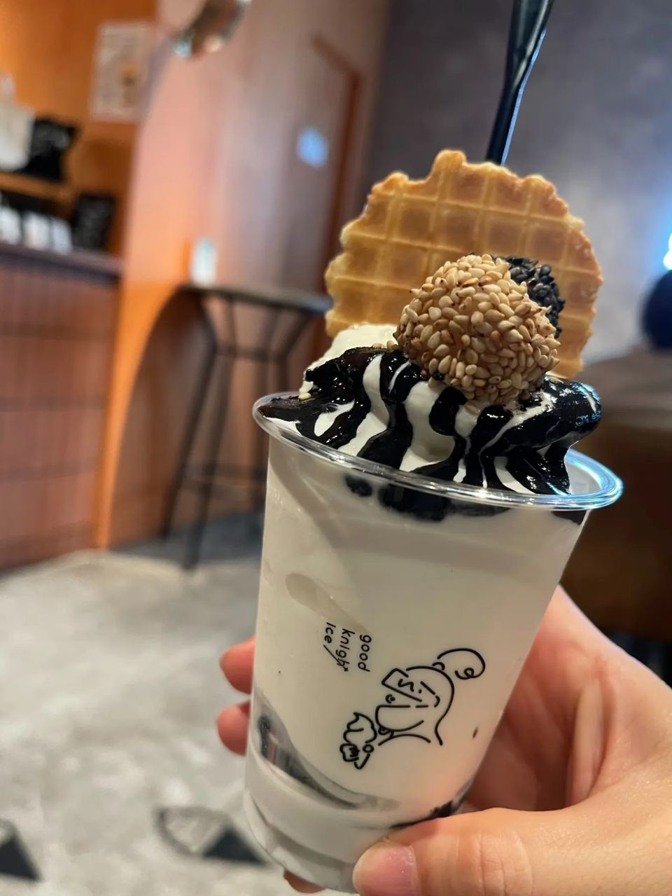
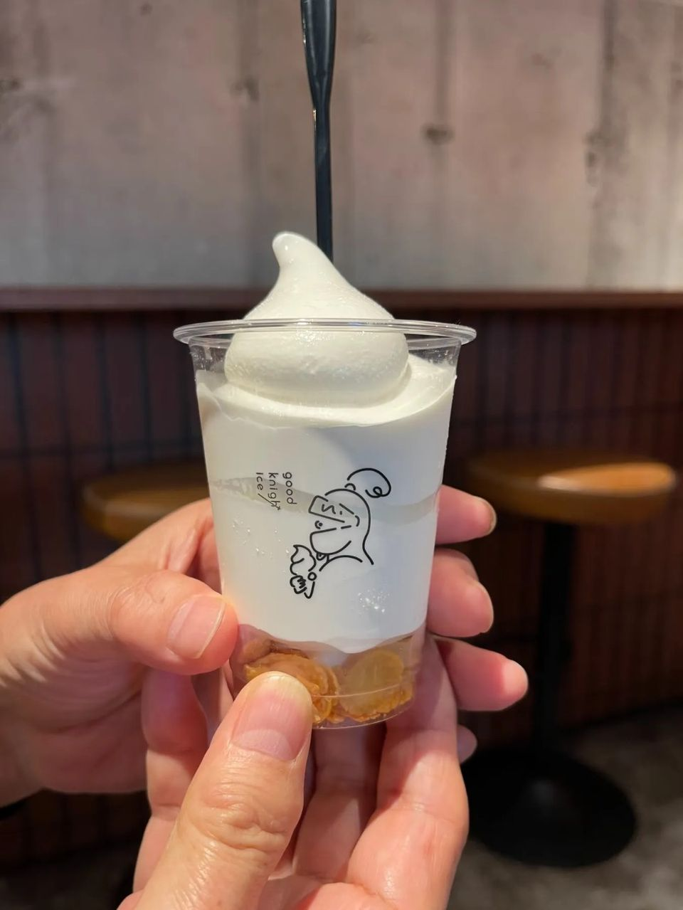
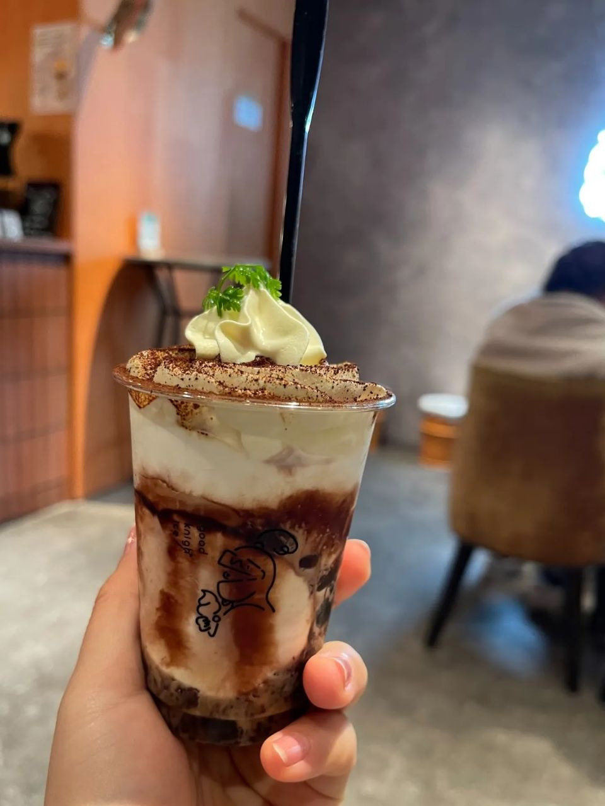

나라 밤 디저트 good knight ice, 밤늦게까지 하는 아이스크림 파르페 가게 후기
나라는 저녁이면 문 닫는 가게가 많은데, 여긴 밤늦게까지! 흑임자·티라미수 컵 파르페 골라 먹는 재미.
나라 여행 중에 밤만 되면
달달한 게 그렇게 당기더라고요 🌙
근데 나라는 저녁만 되면
문 닫는 가게가 많잖아요…
그래서 찾은 밤늦게까지 하는 파르페 가게,
good knight ice 지금부터 풀어볼게요!

1. 긴테쓰나라역에서 걸어서 4분!
역에서 가까워서
숙소 들어가기 전에 하나 먹고 가기 딱이에요 ㅎㅎ
- 위치: 일본 나라 · 긴테쓰나라역에서 걸어서 4분 (아래 '가게 정보'에서 지도 보기)
- 영업: 평일 13:30~23:30 · 주말·공휴일 13:00~23:30 (밤 11시 반까지!)

2. 흑임자 · 티라미수, 컵 파르페 골라 먹는 재미!
흑임자, 티라미수처럼
컵 파르페 종류가 다양해요.


3. 총평
- 추천: 나라에서 밤에 디저트 찾는 분, 숙소 가기 전 달달한 거 한 입 하고 싶은 분
나라 저녁 일정 끝나고
그냥 들어가기 아쉬울 때 들러 보세요!